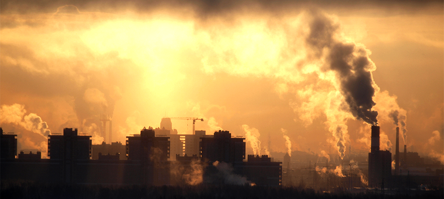
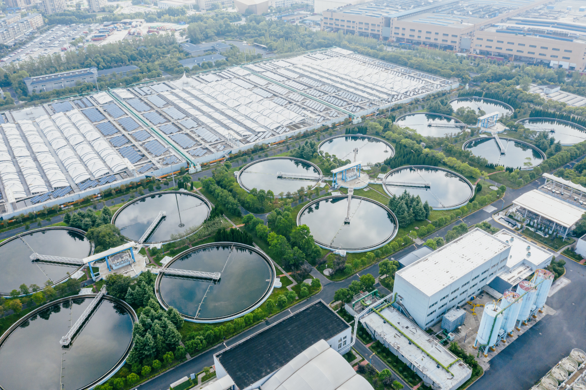

Low Greenhouse Gas Emissions
Nuclear power plants do not burn fossil fuels to generate electricity. As a result, they produce very low greenhouse gas emissions during operation.
How Nuclear Power Affects Our Environment, Economy, and Communities
Nuclear energy plays a major role in South Carolina’s daily life — from the electricity that powers homes to the jobs that support families. Below we outline environmental benefits and considerations, economic impacts, and community outcomes of nuclear facilities in the state.
Nuclear power plants do not burn fossil fuels to generate electricity. As a result, they produce very low greenhouse gas emissions during operation.

Because nuclear plants do not rely on combustion, they do not release air pollutants such as sulfur dioxide or nitrogen oxides that harm local air quality.

While nuclear energy produces minimal air pollution, it does generate radioactive waste that must be carefully stored and monitored. Plants also require water for cooling systems.
Nuclear facilities provide thousands of high-skilled jobs in South Carolina. Positions include engineers, reactor operators, maintenance technicians, safety specialists, and security personnel. These careers often offer competitive salaries and long-term stability.
Nuclear plants contribute substantial property taxes to their counties. This revenue helps fund schools, infrastructure projects, public safety services, and other community programs.